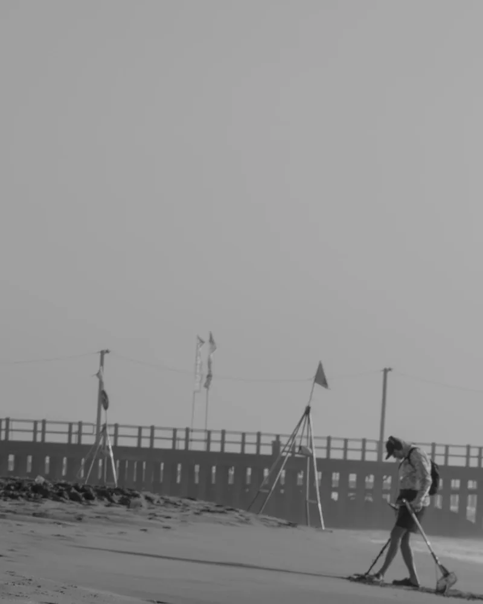

About Shutterhaus
Behind
the lens.
Independent photography from Gauteng. Real connection, careful light, meaningful photographs.
Est. 2019Kempton Park, Gauteng

Founder / Photographer
Alwin Newman.
I'm Alwin, a photographer based in Kempton Park. I shoot portraits, couples, families and social content on location.
I'll help you choose a location and clothing, and guide you through the shoot. You don't need to know how to pose.
Sessions are available in the mornings and on weekends, by appointment.
The approach
Natural. Honest. Timeless.
Natural.
Unforced moments. True to the person.
Honest.
Careful, respectful, thoughtful photography.
Timeless.
Images that still feel important years later.
Sessions, in practice
The practice.
- Location and clothing are planned with you before the shoot — you don't need to know how to pose.
- Sittings run mornings and weekends, by appointment, on location across Gauteng.
- Edited photographs arrive through a private online gallery, with high-res and web-optimised downloads.
- Full gallery delivery within 7–14 days of the shoot; the Social package adds a 48-hour sneak peek of ten images.
- Travel within 25 km of Kempton Park is included; personal use licence with every package.
Colophon — a static, offline-first refresh of shutterhausvisuals.co.za: no trackers, no third-party requests, and every page complete without JavaScript. Plates are from the Shutterhaus archive (studied at commit 084a13b) and re-derived in monochrome; plate titles are editorial labels added by this refresh, and dates read n.d. where the archive carries none.